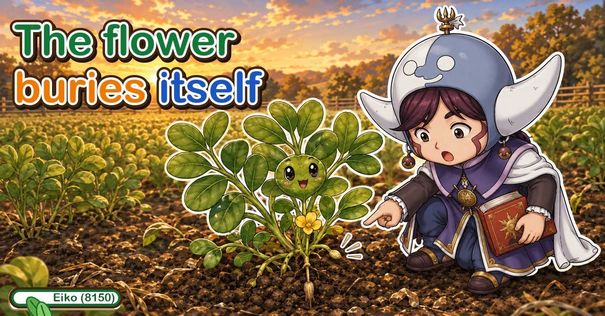
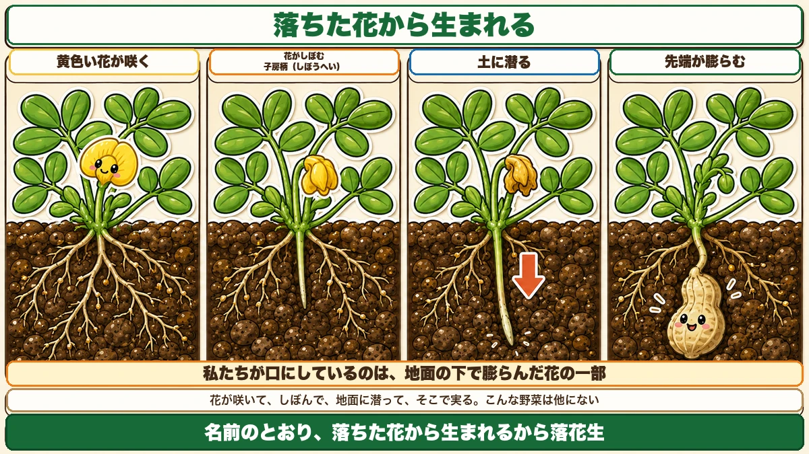
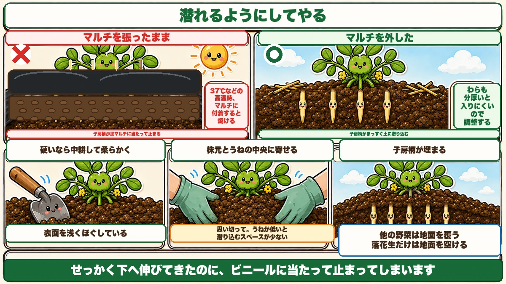
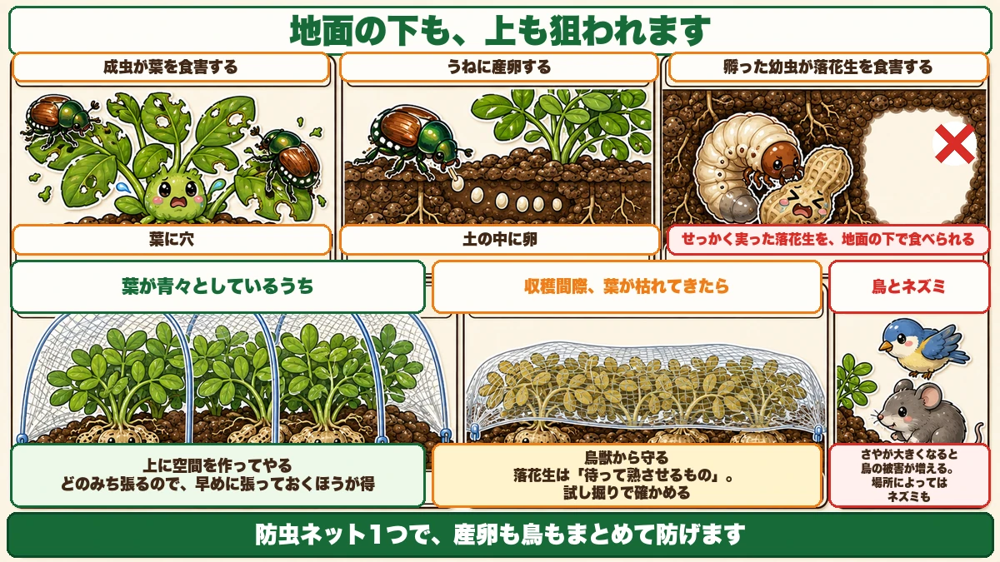

The flower buries itself and becomes the nut 🥜 So take the mulch off

🥜 "It flowered and there's no sign of any nuts."
🥜 "How does a peanut actually fruit?"
🥜 "I dug them up and the pods were tiny."
Hello, I'm Eiko. Eight years of growing vegetables organically and without pesticides, and a teaching licence in science.
Peanuts are grown unlike anything else in the garden.
The point, up front:
A peanut flower buries itself in the soil and becomes the nut.
The Japanese name says so literally: "the nut born from the fallen flower" ☺️
The peg

What this diagram says （図解の文字）
- Born from the fallen flower
- A yellow flower opens → the flower withers → the peg (gynophore) → it buries itself → the tip swells
- What we eat is part of a flower, swollen underground
- Flowers, withers, buries itself, and fruits down there. No other vegetable does this
Peanuts have small yellow pea-family flowers. Once they start, the real season has begun.
Something comes out of the base of the flower
After the flower has opened and gone over, a shoot like a tendril emerges from its base. This is the peg:
- it comes from the spent flower
- its tip is pointed
- it grows downward
And it buries itself
The peg drives into the soil, the pointed tip pushing in. The plant plants itself.
Once underground, the tip swells, and that is the peanut.
What you eat is part of a flower that swelled under the ground.
Which decides everything else
Understand that and the whole growing method follows: make it possible for the peg to get into the soil. That's the job.
① Don't let it dry out
Water stress while it's flowering is the expensive kind.
- the pegs don't thicken
- the pods don't fill
They bury themselves and then fail to develop.
So through the hot weather, don't let it go dry. If the rain is thin, water generously — and for peanuts that means wetting the whole bed, not just the paths. A peg can't go into dry ground.
② Take off the mulch and the straw

What this diagram says （図解の文字）
- Make it possible for the peg to get in
- × mulch left on — the peg hits the black plastic and stops ／ in extreme heat, a peg touching the plastic is scorched
- ○ mulch removed — the peg goes straight into the soil
- Thick straw also gets in the way, so adjust it
- If the surface is hard, loosen it shallowly first
This is the part that's backwards from everything else. If you have mulch or straw down, take it off.
Because the peg can't get through
Obvious once stated: plastic stops the peg. It grows downward, meets the sheet, and that's the end of it.
And in extreme heat it scorches
At very high temperatures, a peg touching the plastic can be scorched. The surface of black mulch runs far hotter than the air, and a soft young peg lying on it burns. Safer to remove it.
Straw too, if it's thick
A thick straw layer makes it hard for the peg to get through. You don't have to remove all of it — thin it out.
③ Earth up
Once the pegs appear, draw soil up and bury them a little.
A low ridge has no room
If the ridge is low, there isn't enough soil for the pods to develop in. The peg goes down and finds nothing. You add soil to give it somewhere to go.
Be generous
- draw soil up around the plant
- and into the middle of the ridge
- enough to bury the lower stems
Don't be tentative — some growers effectively cover the plant over from above.
If the surface is hard, loosen it first
Hoe the surface shallowly to break it up before drawing it in. A peg can't penetrate hard soil.
④ Protecting them

What this diagram says （図解の文字）
- Targeted above ground and below it
- The adults graze the leaves → they lay eggs in the ridge → the hatched larvae eat the peanuts
- × the nuts you grew are eaten underground
- While the foliage is green — hoops, with space above
- You'll need the netting eventually, so putting it on early is the better deal
- Near harvest, as the leaves die back…
Chafer beetles
The sequence is:
- the adults graze the leaves
- they lay eggs in the ridge
- the hatched grubs eat the peanuts
The crop you grew gets eaten underground. Watch for the egg-laying period.
Birds and mice as well
As the pods fill, bird damage increases, and in some places mice. Everything knows when something is good.
One solution covers all of it
Put insect netting over them. It stops the egg-laying and the birds together.
And vary how you fit it:
- While the foliage is green — hoops, so there's space above the plants
- Near harvest, as the leaves die back — lay it straight over, since nothing is growing any more, purely as protection from birds and animals
One net, used two ways.
And put it on early: you'll need it eventually, so fitting it when the beetles first appear is the better deal. Later, the plants are large and the job is harder.
Harvesting
Like potatoes, you can't see the crop. So you start from days.
Count from the flowering date — when about 40–50% of plants have opened at least one flower. Then roughly 75–95 days depending on variety, and if you missed the flowering, about 135 days from sowing.
One caveat: those figures assume mulch was used. Without it, add a week to ten days. Since this article tells you to remove the mulch, expect to be later.
Test dig
Dig one plant and look at how the pods have filled. Too early and they're hollow; too late and they detach and stay in the soil. Looking at the real thing is the reliable method.
The netting pattern on the shell
The usable marker: is there a clear net pattern on the shell?
When about 80% of them show it, they're ready. While the pattern is still vague, wait.
If "how well the pods have filled" doesn't mean much to you, remember the netting pattern and nothing else.
To sum up
- ✅ The flower sends a peg down, buries itself, and the tip swells into the nut
- ✅ What you eat is part of a flower that swelled underground
- ✅ Everything follows from "let the peg get into the soil"
- ✅ Water stress at flowering means thin pegs and empty pods
- ✅ Take the mulch off — the peg can't get through, and may scorch on it
- ✅ Thin thick straw too
- ✅ Other crops get covered; peanuts get uncovered
- ✅ Earth up generously so the pods have somewhere to develop
- ✅ Loosen hard surfaces first
- ✅ Chafer grubs eat the nuts underground; birds and mice take them too
- ✅ Netting handles all of it — hoops while green, laid flat near harvest
- ✅ Count from flowering, roughly 75–95 days; later without mulch
- ✅ Test dig, and look for the net pattern on 80% of shells
- ✅ White rot: white threads at the base — pull the plant
You don't have to do all of it. When the flowers open, go and clear the ground under the plants. That's the whole crop, really 🥜
Thank you for reading!